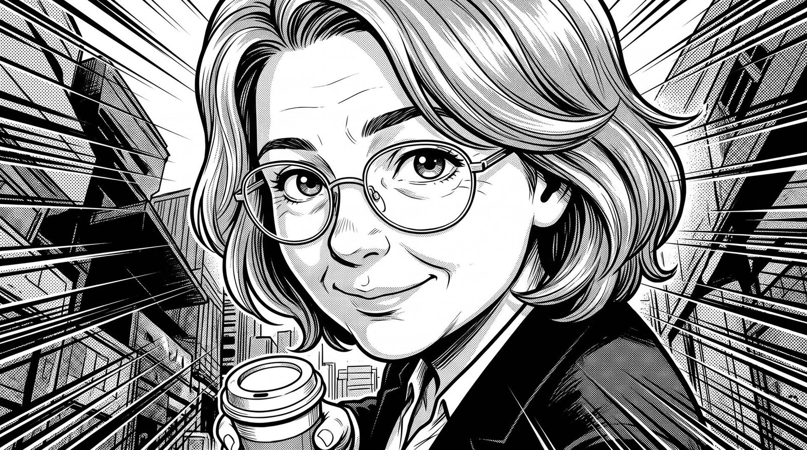
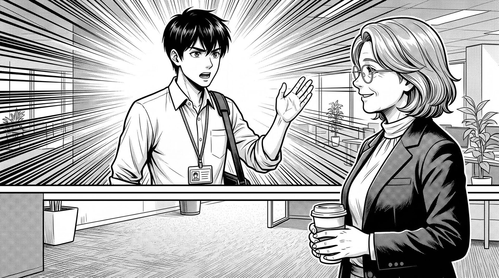
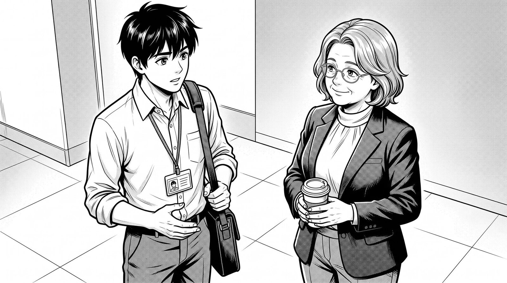
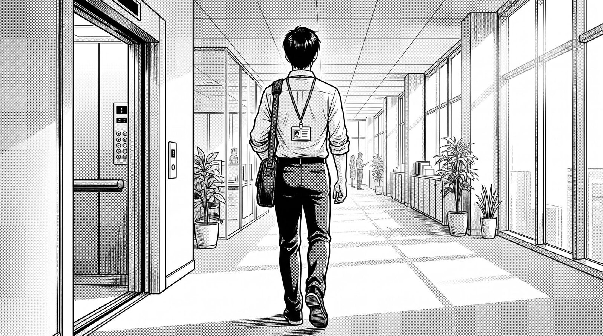

BEAT 1 · SMALL TALK
The doors close. Thirty seconds. What do you say?

"So — what are you working on?"
BEAT 2 · THE PITCH
She asked. Twenty seconds. What do you do with them?

BOLD
Three days to three hours.

STRATEGIC
You asked instead of pushed.
BEAT 3 · THE FOLLOW-UP
Floor eleven. The doors open. Last words?
DIRECT
Name the size of the ask.

TODAY'S CHALLENGE
Say the one you didn't pick.